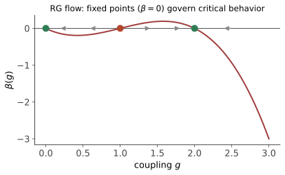

本页目录
统计进阶 III · 重整化群入门
对标：Goldenfeld §9 / Cardy 入门 ｜ 前置：asm-01/02、ode-03（不动点与线性化——RG 的数学就是它） 二十世纪后半叶物理学最深的思想（Wilson 1971，诺奖）：逐尺度看世界。粗粒化 + 重标度 = 参数空间的动力系统；临界点 = 不动点，临界指数 = 不动点处线性化的特征值——普适性（asm-02 之谜）由此得到一个机制解释：满足相同维数、对称性与相互作用范围等条件的系统，可能流向同一不动点；不是所有微观细节都自动无关。
学习层：把“换尺度”变成一条可读的流
1. 谜题：粗粒化以后，温度到底往哪儿走？
你把一维铁磁链每隔一个格点抽掉，再把剩下的格距重新命名为一个单位。看起来只是删掉一半变量，参数却发生了确定的变化。谜题是：如果每一步都把短距离细节抹掉，为什么还能从流向判断“没有有限温相变”？以及，低温端的“长程关联”是否就等同于“临界点”？
2. 先预测：先不要点实验台
- 对无外场一维最近邻链，若 \(K_0=1\)，预测 \(K_1\) 与 \(T_1/J=1/K_1\) 相对 \(K_0,T_0/J\) 如何变化。
- 关联长度用 connected correlation 定义时，抽稀一格并重标度后，当前粗粒格单位中的 \(\xi\) 应该变大、变小还是不变？若换回原始长度单位呢？
- 二维 toy 流中若 \(u_0=0\)，而 \(v_0\neq0\)，你预测它会不会离开临界流形？若 \(u_0\neq0\)，即使 \(v_0\) 很快衰减，最终会发生什么？
3. 最小模型：一条精确闭合的 1D 链 + 一个明确的 toy
A：无外场一维 Ising decimation。 取
在 \(h_{\mathrm{phys}}=0\) 且只保留最近邻耦合时，求和掉偶数格点可以精确写成同一形式（外加与自旋无关的自由能常数）：
有限温度的对称 Gibbs 状态有 \(\langle s_i\rangle=0\)，因此本实验的 connected 两点函数为
这里 \(a\) 是当前粗粒格距。抽稀后 \(a'=2a\)，\(\xi_c/a'\) 由 \(K'\) 重新计算；换回原始长度单位则 \(2^n\xi_c(K_n)/a_n\) 保持不变，这是同一物理长度的两种记账。
B：临界点附近的二维 toy linearized flow。 这不是某个具体材料或具体模型的指数表，而是用来读懂线性化的教学动力系统：
把 \(u\) 当作热方向的 scaling field、\(v\) 当作无关方向；\(u=0\) 是 toy 的临界流形，且在“\(u\) 就是温度偏离量、标度假设成立”的条件下 \(\nu=1/y_t\)。这里的 \(y_t,y_i,\nu\) 只属于这个 toy 的参数化，不能冒充某种材料或具体模型的指数。
4. 动手操作：两个页签，先读数再读图
实验台的 A 页签调 \(K_0\)（等价地读 \(T_0/J=1/K_0\)）和迭代步数，逐行显示 \(K_n,T_n/J,\xi_c/a_n\) 以及换回原始单位的物理关联长度，并用 SVG 画出流向。B 页签调 \(b,y_t,y_i,u_0,v_0\) 和步数：图中的竖线是 \(u=0\) 临界流形，横纵方向分别标出 relevant/irrelevant 流；表格给出每一步的 \(u_n,v_n\)。所有数值都由公式直接计算，不抽样、不卡随机种子。
无 JavaScript 时的静态读法：A 页签以 \(K_0=1\)、\(n=4\) 为例；B 页签以 \(b=2,y_t=1,y_i=-1,u_0=0.25,v_0=0.8,n=4\) 为例。
| A: \(n\) | \(K_n\) | \(T_n/J\) | \(\xi_c/a_n\) | \(2^n\xi_c/a_n\) |
|---|---|---|---|---|
| 0 | 1.000000 | 1.000000 | 3.671861 | 3.671861 |
| 1 | 0.662501 | 1.509431 | 1.835930 | 3.671861 |
| 2 | 0.350061 | 2.856644 | 0.917965 | 3.671861 |
| 3 | 0.113672 | 8.797236 | 0.458983 | 3.671861 |
| 4 | 0.012812 | 78.054616 | 0.229491 | 3.671861 |
| B: \(n\) | \(u_n\)（relevant） | \(v_n\)（irrelevant） |
|---|---|---|
| 0 | 0.2500 | 0.8000 |
| 1 | 0.5000 | 0.4000 |
| 2 | 1.0000 | 0.2000 |
| 3 | 2.0000 | 0.1000 |
| 4 | 4.0000 | 0.0500 |
所以 A 的 \(K\) 流向高温固定点 \(K=0\)，但原始单位的 \(\xi_c\) 只是在重标度记账下保持；B 中 \(u_0\neq0\) 最终离开线性化邻域，而 \(u_0=0\) 才留在 toy 临界流形上。
5. 误区 / 边界：这页的公式没有声称什么
- 低温固定点不等于有限温临界点：一维映射的 \(K=\infty\) 是 \(T=0\) 端点；在对称零温极限里 \(\xi_c\) 可发散，但这不是有限温相变。一般有序相还会有 \(\langle s_0s_r\rangle\to m^2\) 的平台，必须先减去 \(m^2\) 才能谈 connected correlation length；在精确 \(T=0\) 的纯基态中，连接涨落甚至可以完全消失。
- A 的精确闭合有边界：\(\tanh K'=\tanh^2K\) 只适用于无外场的一维最近邻链、抽稀比例 \(b=2\)（周期链或无限链的 bulk 记账）；有限开链的端点会带边界项。加外场、长程相互作用或换到更高维后，不能直接套这条一维映射。
- RG 一般会生成新耦合：精确积掉自由度通常产生外场、次近邻、长程和多自旋项；“仍是 Ising 形”只有在特殊闭合情形成立，或是把完整有效作用量截断并投影回某个 ansatz 的近似，不能说截断后总保持 Ising 形。
- \(\beta\) 的符号要先约定：本页若写 \(\beta_{\ell}(g)=\mathrm d g/\mathrm d\ell\)，取 \(\ell=\log b\) 沿粗粒化、向长距离走；有些场论文本用 \(\beta_{\mu}(g)=\mathrm d g/\mathrm d\log\mu\)，而 \(\mu\propto1/L\)，所以两者符号相反。相关/无关的判别以本页的 \(b^{y_i}\) 约定为准。
- B 是线性化玩具：它只在临界点附近且变量仍在小邻域时可信；\(\nu=1/y_t\) 还需要 \(u\) 确实是热 scaling field、并采用相应的关联长度标度假设。它不是具体材料、格子或模型的数值预测。
- 普适性有条件：同一普适类通常要求维数、序参量对称性、相互作用范围、守恒律/动力学类别等关键结构相同；微观晶格常数等细节可能无关，但改变这些结构可以改变固定点与指数。
6. 正式映射：从一条相线到参数空间的雅可比
一般把所有允许的耦合收成 \(g=(g_1,g_2,\ldots)\)，粗粒化与重标度是
\(y_i>0\) 的 relevant 方向会放大，必须调准才能落到临界流形；\(y_i<0\) 的 irrelevant 方向会衰减；\(y_i=0\) 是 marginal，需要更高阶项判断。若温度偏离量 \(t\) 沿 \(y_t>0\) 方向，关联长度满足
这里的 \(b\) 是离散粗粒化的尺度因子；把 \(b=e^\ell\) 取连续极限才得到 beta 函数。固定点、线性化和临界指数的关系是正式映射，A 的一维精确流与 B 的 toy 只是在不同参数空间里的两个可计算投影。
7. 迁移问题：换模型时，先问“哪些假设还在？”
- 对 A 取 \(K_0=1.5\)，不用实验台先估计 \(K_1\) 的方向，并说明 \(T/J\) 与 \(\xi_c/a_n\) 各自为什么变化；再用 \(\xi_{\mathrm{phys}}/a_0=2^n\xi_c/a_n\) 检查长度记账。
- 在 B 中令 \(u_0=0,v_0=0.7\)，分别把 \(y_i\) 调成 \(-0.2\) 和 \(-1.5\)，解释两条轨迹都留在临界流形但靠近速度不同；再令 \(u_0=0.02\)，说明为什么“很小”不等于“无关”。
- 把“二维 toy 的 \(y_t=1\)”换成二维方格 Ising、三维短程磁体或含长程相互作用的模型时，哪些输入（维数、对称性、相互作用范围、是否有外场）必须重新检查？写出一个不能从本页直接搬走的指数，并说明原因。
1. RG 变换：粗粒化 + 重标度
三步操作：① 粗粒化：把 \(b^d\) 个自旋合成一个块自旋（多数表决/求和）——积掉短波涨落；② 重标度：长度除以 \(b\) 恢复原格距；③ 读出新有效作用量：一般得到更大的耦合空间 \(g' = R_b(g)\)，其中可能包括外场、长程、次近邻和多自旋项。只有特殊的精确闭合（本页 A）或明确声明的截断投影，才可以把它简写成单个 \(K'=R(K)\)。
核心观察：用 connected 两点函数定义的关联长度，在当前粗粒格单位中按 \(\xi_c' = \xi_c/b\) 缩短。有限相关长度的相通常流向短程的平庸吸引子；临界固定点才要求 \(\xi_c/a=\infty\)，即没有有限相关尺度。低温固定点可能是零温有序端点，不能仅凭“低温”或未减去 \(m^2\) 的总关联就把它叫作临界固定点。
2. 一维 Ising 的精确 RG【推导】
抽稀（decimation）：对偶数格点求和。在无外场一维最近邻链的 bulk 中，两步转移矩阵 \(T^2\) 仍可写成同一最近邻 Ising 形式，差一个与自旋无关的加性常数 ⇒ 新耦合满足
流图分析（ode-03 的一维相线）：对有限 \(K>0\)，\(\tanh K < 1\) ⇒ \(K' < K\)，所以流向高温不动点 \(K=0\)；扩展参数空间里的 \(K=\infty\) 是零温端点。它不是有限温临界点，因而得到一维无有限温相变的 RG 证明（asm-02 转移矩阵结论的第三种证法，且给出“为什么”：任何有限耦合终会被粗粒化冲淡）。\(\blacksquare\)
3. 临界指数 = 不动点的线性化

临界不动点 \(K^*\) 附近线性化（ode-03 的 Jacobi 流程）：\(\delta K' = \Lambda\,\delta K\)，特征值写成 \(\Lambda_i = b^{y_i}\)：
- \(y_i > 0\)：相关方向（偏离被放大——温度、外场：必须调准才能到临界点，实验上"临界点难伺候"的原因）；
- \(y_i < 0\)：无关方向（某些微观细节被冲刷——例如在同一普适类内的格子形状、弱次近邻耦合……）。这解释了普适性的一个机制，但只有在维数、对称性、相互作用范围等关键结构相同的条件下，系统才可能流进同一个不动点。
指数的换算【推导】：关联长度 \(\xi(\delta K) = b\,\xi(b^{y_t}\delta K)\) 迭代至 \(O(1)\) ⇒ \(\xi \propto |\delta K|^{-1/y_t}\)——\(\nu = \frac{1}{y_t}\)；同法产出全部指数并给标度关系（\(\alpha + 2\beta + \gamma = 2\) 等——指数不独立，两个 \(y\) 生成全家【骨架：自由能的齐次标度形式 \(f(t, h) = b^{-d}f(b^{y_t}t, b^{y_h}h)\) 逐个求导】）。有限尺寸标度一嘴：\(L\) 有限时 \(\xi \to L\) 截断——数值模拟提取指数的标准技术（comp-01 的 Ising 模拟由此定量）。
4. RG 的世界观辐射（本页的真正遗产）
- 有效理论哲学：任何理论都是"某尺度下的有效描述"，无关算符沿流衰减——为什么低能物理可以不知道高能细节（工程能用连续介质、化学能不管夸克）：现代物理的认识论支柱；
- 场论的重整化（qft-03）：在动量/能标上也会出现跑动耦合和尺度依赖；RG 是组织紫外与红外描述的框架，但场论与统计物理的变量、可观测量和固定点解释要逐项对应，不能用一句“完全相同”替代映射。
- 临界维数：对短程 Ising/\(\phi^4\) 普适类，上临界维数为 \(d_c=4\)；\(d>4\) 时平均场标度占主导，\(d=4\) 还会有边际对数修正，\(4-\epsilon\) 展开【引用 Wilson–Fisher】才是从四维附近系统计算低维指数的方法；这不是任意相互作用的普遍结论。
- 🔗 ML 回声：深度网络逐层抽象与 RG 粗粒化的类比（层 = 尺度）是活跃研究纲领【引用】；扩散模型逐噪声尺度生成（comfy 课）与"逐尺度处理"同气质——"multi-scale 是自然与算法共享的组织原则"。
5. 练习与要点
例 1（一维 RG 亲手迭代） \(K_0 = 1\)：\(\tanh K' = \tanh^21 \approx 0.58^2\cdots\)——数值迭代四五步看 \(K \to 0\) 的奔流；换 \(K_0 = 3\) 依旧——"任何有限耦合终归高温"的手感。
例 2（二维近似 RG） 三角格多数表决的实空间 RG（Niemeijer–van Leeuwen 一阶【引用】）：得 \(K^* \approx 0.34\)、\(y_t \approx 0.88\)（精确 \(K^* = 0.275, y_t = 1\)）——粗糙近似已捕捉不动点结构：RG 的稳健性演示。
例 3（标度关系验证） 用 asm-02 对照表验证 \(\alpha + 2\beta + \gamma = 2\)：平均场 \(0 + 1 + 1 = 2\) ✓；二维 \(0 + \frac14 + \frac74 = 2\) ✓；三维 \(0.110 + 0.652 + 1.237 \approx 2\) ✓——三套指数一条恒等式：标度理论的体检单。\(\blacksquare\)
下一门：广义相对论三页——你的流形几何（grad-math）在此整体变现：引力 = 时空的曲率。